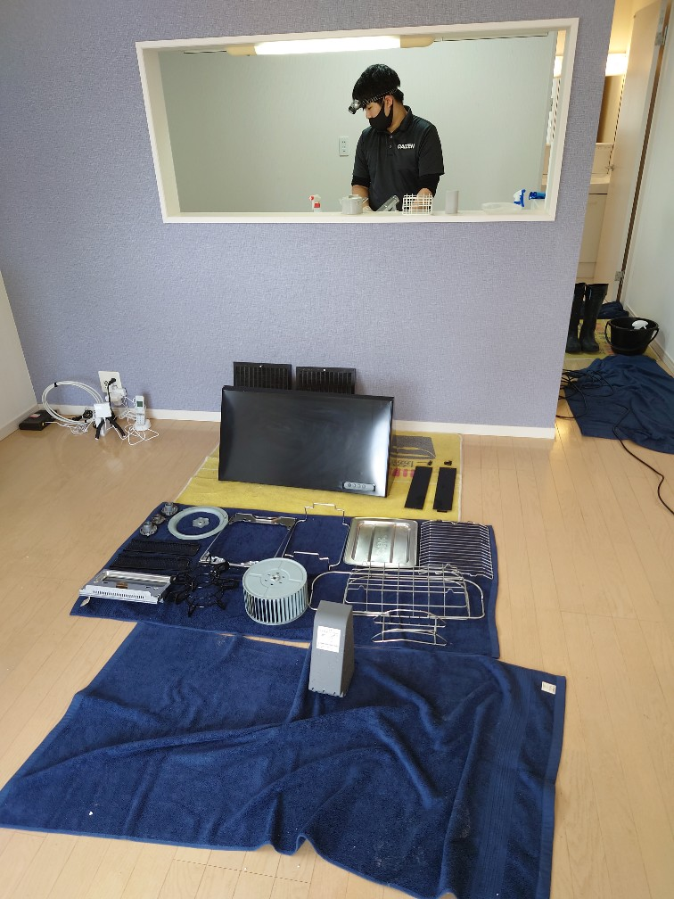
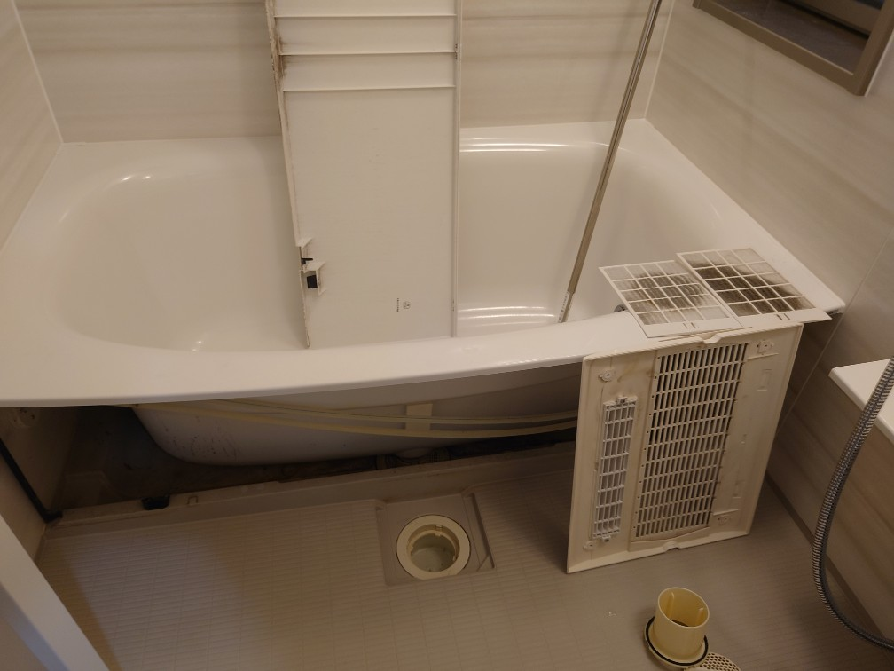
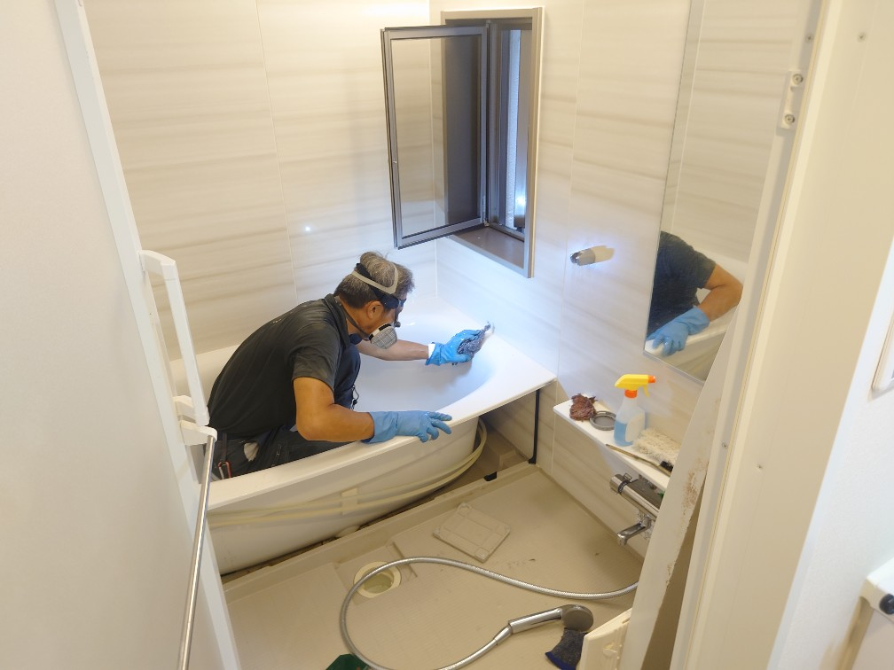
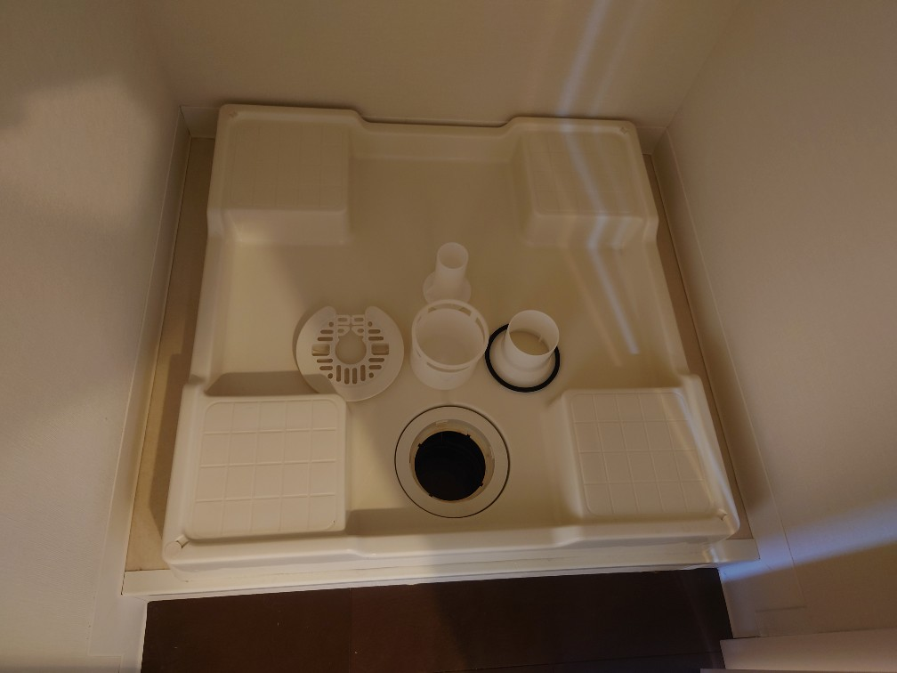

年末年始の水回りクリーニングプレミアムセットが好評です!浴室オール分解洗浄、キッチンオール分解洗浄、共に3時間前後のエキスパートによるハイクラスクリーニングです!




年末年始の水回りクリーニングリクエストが始まっております。DAIZENクリーニングメソッドを用いたハイランククリーニングをぜひお試し下さい。水回りクリーニングは1番経験とテクニックが必要で、DAIZENでは本当に多くのスペシャルクリーニングの実績がございますので安心してお申込み下さい。「今までクリーニングして貰った中で1番綺麗になった」「著名大手クリーニングよりも綺麗になりびっくりした」「毎年DAIZENクリーニングにしたいので来年の水回りも先に予約したい」などなど、大変嬉しいご評価をたくさんのお客様から頂戴しております。年始年始の水回りクリーニングは、お申込み順に予約受付しております、このクリーニングは本当に集中力勝負でして、なるべくお昼休憩を挟まず一気に仕上げますので、8:00開始を（例外有り）お願いしております、ぜひ、DAIZENクリーニングメソッドの集大成であるハイランク水回りクリーニングをお試し下さい、宜しくお願いいたします。